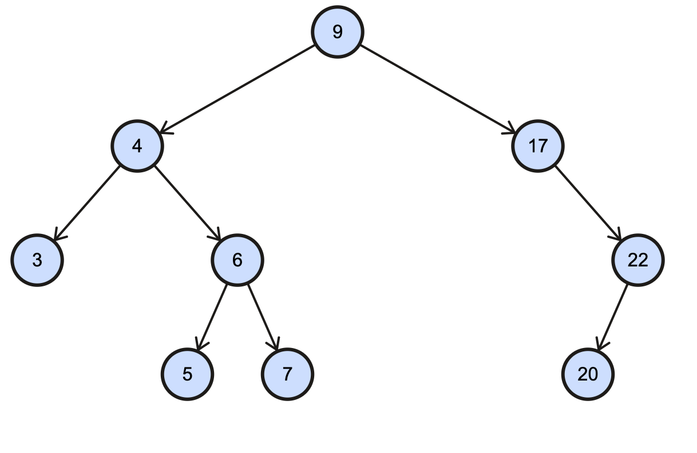

1. Given an array, rotate the array to the right by k steps, where k is non-negative.
Input: [1,2,7,8,9] & k=3 (3 steps), Excepted Output: [7,8,9,1,2]]
Actual output:
2. Given a binary tree, find the height of the binary tree. (Mandatory)
Input: [9, 4, 17, 3, 6, 22, 5, 7, 20], Excepted Output: Height of the tree

Actual output:
3. There is an array of numbers from 1 to 10 which are not in order. Sort the array in O(N) complexity
Input: [10, 7, 9, 2, 8, 3, 5, 4, 6, 1]
Actual output: